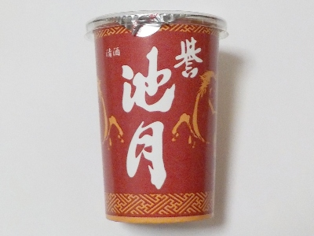
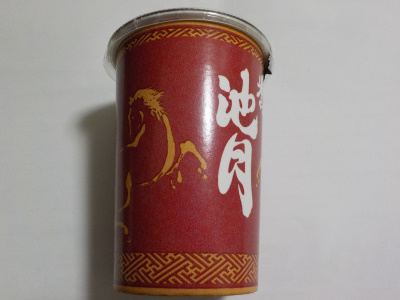
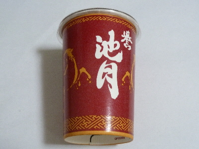
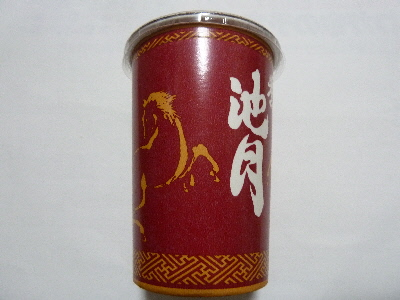

池月酒造の誉池月
2025/03/25

毎回思うんですが、舌がピリっとします。これはこれで個性があっていいんでしょうね。
地酒は飲んだ時の感想が飲むたびに変わったりしますが、これは変わらないです。完成しているのかな。
島根県邑智郡邑南町阿須那1-3
2025/03/25

毎回思うんですが、舌がピリっとします。これはこれで個性があっていいんでしょうね。
地酒は飲んだ時の感想が飲むたびに変わったりしますが、これは変わらないです。完成しているのかな。
2019/07/13
邑南町のお酒です。

お米の甘さと、ちょとピリっとした辛さがありました。こうゆうのは甘口かな、辛口かな。
全体的にはスッキリしてて飲みやすかったです。
2017/07/22
邑南町のお酒ですが、ゆめタウン出雲で買えました。

日本酒はしっかり糖分があっていいですね。
糖質ゼロのアルコールはおつまみが欲しくなるんですが、
このお酒は味が濃いのでおつまみ無しでも美味しく飲めました。
日本酒はいいな。
2017/01/10
この頃 日本酒をたまに飲んでます。

安い発泡酒とかチューハイと比べると、このワンカップタイプは値段が倍くらいするので贅沢ですね。
しっかり味合わないといけません。
このお酒は辛口なのかな？味が濃いんですが、甘くはなかったです。
後、口に含んだ時に少しピリピリしました。こうゆうのってたまにありますね。
ネットで調べてみたら、酸度が高いとピリピリするらしいです。